（四）插件安装和其他设置
虽然更换了主题，但如果想要在新的主题添加这些功能，除了修改主题配置文件外，其他步骤是一样的，然后去新的主题教程里面跟着修改主题配置文件
前言
NexT中已经自带了许多插件，很多不需要额外安装，只需要在主题配置文件中设置一下即可。但还有一些好用的插件需要额外安装。
自带插件
显示数学公式
NexT 提供了两个用于显示数学公式的渲染引擎：MathJax和KaTeX。（butterfly也提供）
我选择了MathJax，虽然说的渲染速度慢一点，但兼容性很好。
KaTeX只支持LaTeX语法，重要的是在上面的资料中提到了KaTeX存在许多问题，比如使用行内公式，即使用\$公式$语法，前后除了空格不能有其他字符，但我使用行内公式就是为了将公式放入到文字中而不是单独使用一行。
要使用哪个渲染引擎首先在主题配置文件中修改，将对应的enable改为true：
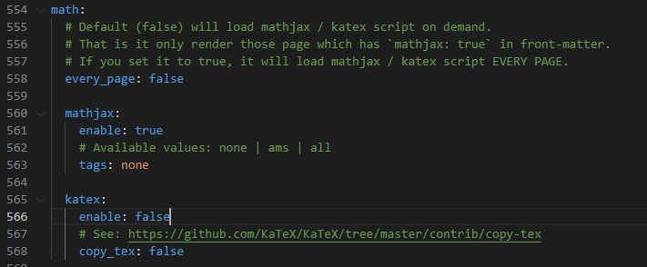
every_page：设置为true，默认为每一个博客渲染数学公式；设置为false，只会为开头加了mathjax: true的博客渲染，如下
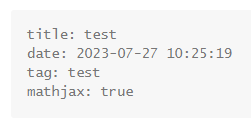
hexo自带了一个渲染器hexo-renderer-marked，但并不好用，很容易渲染错误。
NexT推荐使用hexo-renderer-pandoc
要使用这个首先要安装pandoc
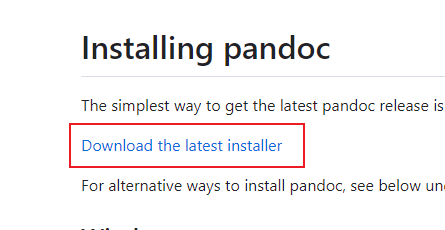
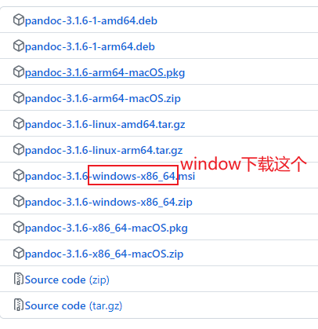
安装好后，在站点根目录打开Git bash，依次输入：
1 | npm un hexo-renderer-marked |
就可以正常使用了。
在编写公式时，如果出现连续的花括号，要在每个左花括号间加空格，否则会被识别成Nunjucks模板语法，导致生成错误，如：
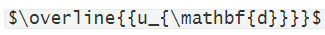
在hexo g时会报错，需要改为：$\overline{ {u_{\mathbf{d}}}}$
自动空格
主题配置文件：
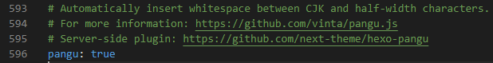
设置后，会自动在连着的英语和中文之间添加空格。
本地搜索
在站点根目录下打开git bash执行
1 | npm install hexo-generator-searchdb |
打开站点配置文件，在最后添加以下代码
1 | search: |
打开主题配置文件，修改：
1 | # Local search |
评论系统
NexT内部自带了几个评论系统的设置，但查阅资料后发现waline评论系统更加好用，所以选择了waline评论系统。
但waline系统需要一个额外的域名（自带的域名需要魔法上网），才能正常显示评论和写评论等。
我选择在腾讯云买了一个最便宜的域名，第一年只要9元，后面绑定域名的操作也是基于腾讯云平台的。
waline官网步骤已经说的非常详细了，但有几个步骤一点差别。一样步骤的我就简单略过，大家参考官网即可，不一样步骤再详细的说一下。
进入上面提到的官网
LeanCloud设置
完全跟官网的步骤做即可
Vercel 部署
注意第4步输入环境变量，key输入的是LEAN_ID, LEAN_KEY 和 LEAN_MASTER_KEY，value则是对应的 APP ID, APP KEY, Master Key，输入一个后点Add another，一共输入三个，最后点右下角save
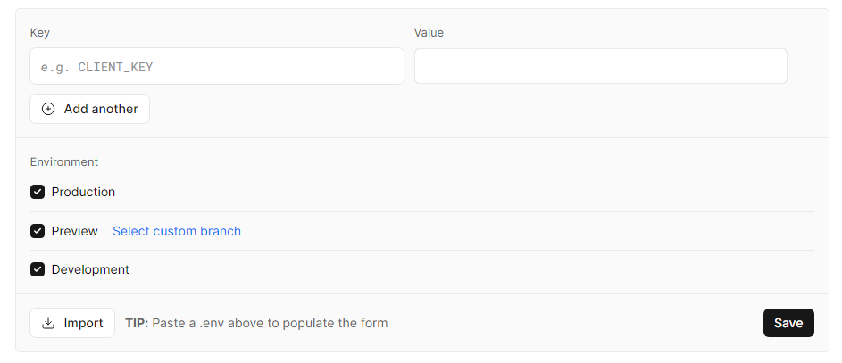
其他步骤按官网步骤。
绑定域名 (可选)
先在腾讯云买一个域名（第一次买会有几次审核，我等了2个小时左右，域名最终才可用）。我选择了最便宜的.top。假定买的域名为123.top。
按第二部输入123.top后，
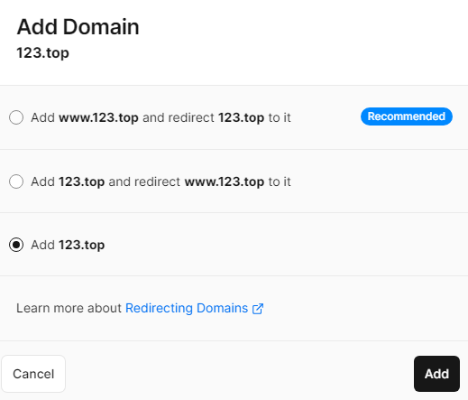
选第三个。
添加后会提示我们：
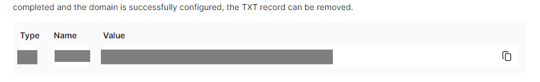
打开腾讯云的控制台，进入DNS 解析 DNSPod
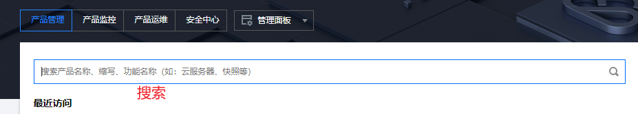
选择你的域名，进入，点击添加记录
主机记录填写上面Name，记录类型选择Type，记录值填写Value
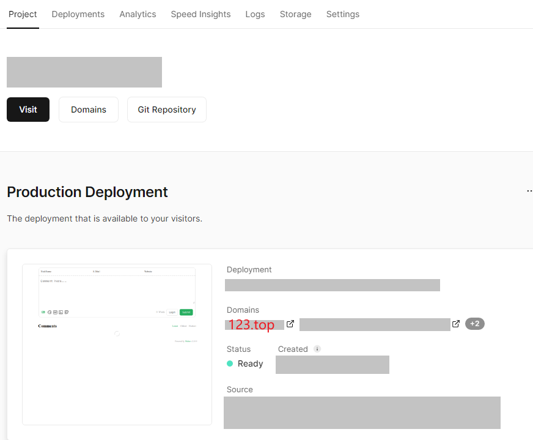
会发现这个界面的Domains会多出123.top
123.top就是评论系统的网址。
HTML 引入 (客户端)
官网上的这一步不需要。跳过。
评论管理 (管理端)
访问123.top/ui/register进行注册，首个注册的人会被设定成管理员。
管理员登陆后，即可看到评论管理界面。在这里可以修改、标记或删除评论。
用户也可通过评论框注册账号，登陆后会跳转到自己的档案页。
本地博客设置
在站点根目录打开gitbash输入：npm install @waline/hexo-next
在主题配置文件中添加以下内容，enable设为true，serverURL设为123.top，其他设置按照说明根据喜好设置
1 | # Waline Config File |
保存部署后，就可以看到评论区了。
但这样分类，标签和关于页面下也有评论区，但我只想在博客里显示评论。
打开站点根目录\source，打开about，categories，tags文件夹下的index.md，在顶部添加comments: false
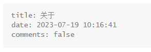